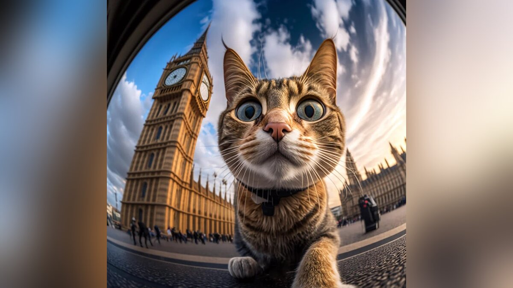

Нейросети представляют собой компьютерные системы, способные имитировать работу мозга человека, включая обучение и анализ информации. Одной из захватывающих областей применения нейросетей является генерация изображений.
Одним из ключевых инструментов в этой области является генеративно-состязательная сеть (GAN). Эта сеть состоит из генератора и дискриминатора, работающих в паре. Генератор создает изображения, а дискриминатор оценивает, насколько они реальные. Процесс обучения позволяет им взаимодействовать так, что генератор начинает создавать очень реалистичные изображения.
Главное преимущество GAN заключается в способности создавать высокореалистичные и многогранные изображения. Например, нейросеть может генерировать изображения пейзажей, лиц, предметов и других объектов на основе обучающих данных, что полезно в различных областях, таких как искусство, дизайн, реклама и техническое проектирование.